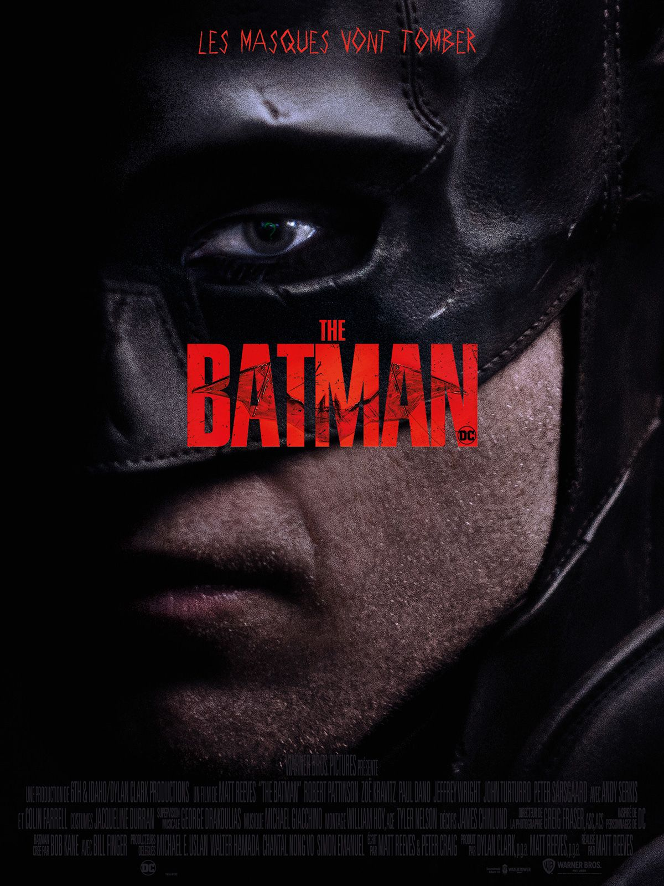

Deux affiches du film

Cover alternative du film ou l'on voit Batman en fond rouge et noir avec "The Batman" en bas au centre de l'affiche

Cover original du Film ou l'on voit le masque de Batman ainsi que son oeil dans toute l'affiche et "The Batman" au centre
Synopsis du film
Dans sa deuxième année de lutte contre le crime,
le milliardaire et justicier masqué Batman explore la corruption qui sévit à Gotham et notamment comment elle pourrait être liée à sa propre famille,
les Wayne, à qui il doit toute sa fortune.
En parallèle,
il enquête sur les meurtres d'un tueur en série qui se fait connaître sous le nom de Sphinx et sème des énigmes cruelles sur son passage.